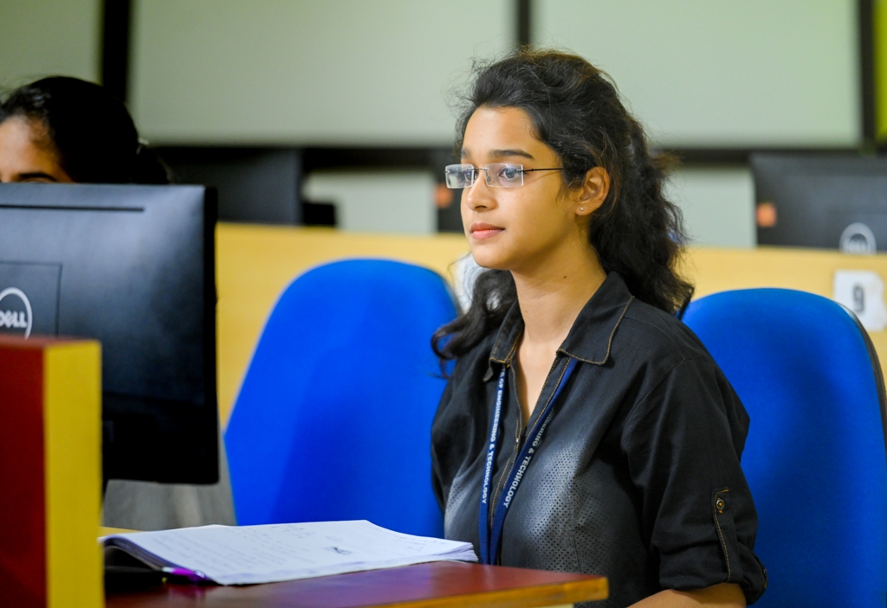

The Department was started in the year 2008 with an intake of 60 for the undergraduate program. The course has become popular among students due to the achievements and rigor. The department has well qualified, experienced and committed faculty to provide quality industry tuned education to the students.
